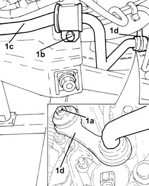
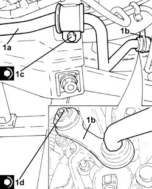

4420C10 REAR SUSPENSION STABILIZER BAR - R+R
- Path
- Procedures > 44 SUSPENSION AND WHEELS > 4420 REAR SUSPENSION > 4420C REAR SUSPENSION STABILIZER BAR/LINKS > 4420C10 REAR SUSPENSION STABILIZER BAR - R+R
- Kind
- repair procedure (removal / refitting; the operation number is the code)
- Applies to
- all engines; all production periods
- Interactive page
- https://sloeber94.github.io/elrnDB-fCrm/en/#/194000558
Applies to: all engines; all production periods
 Removing
Removing
 Refitting
Refitting- Position the vehicle on a lift.
Op. 4450B13 REAR WHEELS (TWO) - R.R
Op. 4420A40 L/H OR R/H REAR SUSPENSION COIL SPRING (ONE) - R+R
(both).
Op. 1076B30 FRONT EXHAUST SILENCER - R + R
Op. 1076B20 REAR EXHAUST SILENCER - R + R
Op. 4420D42 REAR SUSPENSION BEAM - R R
1. Unscrew bolts (1a) and (1b), the remove stabiliser bar (1c) with joints (1d).

Applies to: all engines; all production periods
Refitting
Removing- Lubricate the damping rings on the stabiliser bar with silicone grease.
1. Position the stabiliser bar (1a), complete with joints (1b), in its housing and secure it tightening the bolts (1c) and (1d) to the recommended torque.
Component | Fastening | dia | Value (daNm) | Validity |
|---|---|---|---|---|
Rear suspension anti-roll bar | Bolt (to be replaced) | M8 | (crossmember side) 2.3 - 2.8 + 30° |
Component | Fastening | dia | Value (daNm) | Validity |
|---|---|---|---|---|
Rear suspension anti-roll bar joint | Bolt (to be replaced) | M10 | (steering knuckle side) 4.1 - 5.0 + 60° |

Applies to: all engines; all production periods
Op. 4420D42 REAR SUSPENSION BEAM - R R
Op. 1076B20 REAR EXHAUST SILENCER - R + R
Op. 1076B30 FRONT EXHAUST SILENCER - R + R
Op. 4420A40 L/H OR R/H REAR SUSPENSION COIL SPRING (ONE) - R+R
(both).
Op. 4450B13 REAR WHEELS (TWO) - R.R
- Remove the vehicle from the lift.
Topics linked from this page (5)
- 1076B20 REAR EXHAUST SILENCER - R + R
- 1076B30 FRONT EXHAUST SILENCER - R + R
- 4420A40 L/H OR R/H REAR SUSPENSION COIL SPRING (ONE) - R+R
- 4420D42 REAR SUSPENSION BEAM - R R
- 4450B13 REAR WHEELS (TWO) - R.R